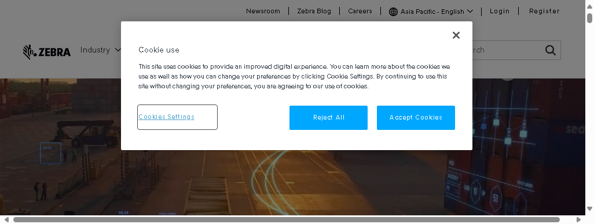

-
clickcookies
6:49:59 AM / 00:00:00:463 Fail
clickcookies
02.20.2025 6:49:59 AM 02.20.2025 6:50:00 AM 00:00:00:463 · #test-id=1Status Timestamp Details Fail 6:49:59 AM Test Failed Fail 6:49:59 AM -
openurl
6:50:03 AM / 00:00:02:909 Pass
openurl
02.20.2025 6:50:03 AM 02.20.2025 6:50:05 AM 00:00:02:909 · #test-id=2Status Timestamp Details Pass 6:50:05 AM Test Passed -
listurlsofmainmenu
6:50:05 AM / 00:00:16:031 Fail
listurlsofmainmenu
02.20.2025 6:50:05 AM 02.20.2025 6:50:22 AM 00:00:16:031 · #test-id=3Status Timestamp Details Fail 6:50:22 AM Test Failed Fail 6:50:22 AM Fail 6:50:22 AM Test Failed Fail 6:50:22 AM
-
org.openqa.selenium.NoSuchElementException
1 tests
org.openqa.selenium.NoSuchElementException
1 failedStatus Timestamp TestName Fail 06:49:59 AM clickcookies -
org.openqa.selenium.remote.UnreachableBrowserException
1 tests
org.openqa.selenium.remote.UnreachableBrowserException
1 failedStatus Timestamp TestName Fail 06:50:05 AM listurlsofmainmenu
Started
Feb 20, 2025 06:49:46 AM
Ended
Feb 20, 2025 06:50:22 AM
Tests Passed
1
Tests Failed
2
Tests
Log events
Timeline